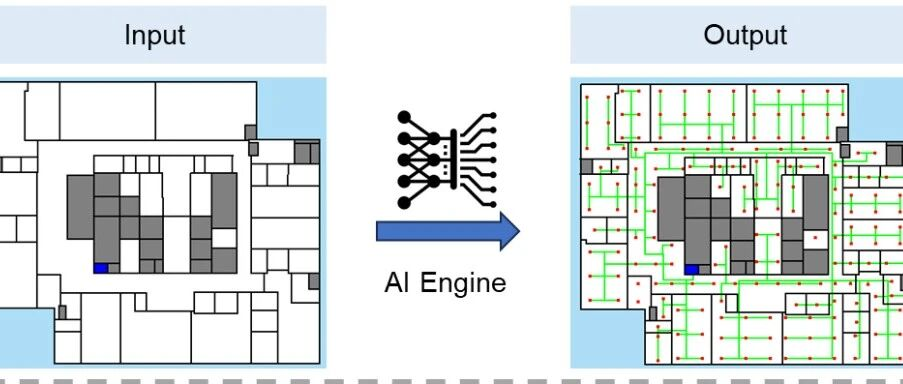

建筑消防喷淋系统自动化设计：AI 一键出图
编者荐语：
生成式AI在建筑、结构、设备、基础设施等众多领域都有很好的应用前景，在保证设计质量的同时，显著提升设计效率。
以下文章来源于理大火灾安全科学 ，作者理大火灾安全
香港理工大学火灾安全科学实验室（黄鑫炎教授课题组），致力于消防安全领域的科普，火灾科学与技术的分享。

在建筑设计过程中，消防设计是一项至关重要的工作内容，涵盖探测报警、灭火、防排烟、人员疏散等多个系统。相关设计成果通常以详尽的图纸形式呈现，既关系到建筑的整体安全性，也在工程设计中占据了较大的工作量和比例，尤其在中大型公共建筑中更为显著[1]。

目前，喷头、烟感等消防组件的设计和布置仍主要依赖工程师根据规范和经验手动完成。整个流程不仅重复性高、耗时长，还容易因疏漏导致遗漏或布置不合理，尤其在面对复杂建筑空间时，设计负担显著增加，影响整体效率和准确性。


针对这些问题，香港理工大学与清华大学的研究团队合作，提出了一种基于人工智能的喷头布置自动化方法[2]。通过训练生成式深度学习模型，使其学习建筑平面与喷头布局之间的关系，模型能够在给定输入建筑图纸和火灾危险等级后，自动生成符合规范要求的喷头布置方案。这一方法不仅帮助工程师从重复、耗时的图纸绘制中解放出来，还使其能够将更多精力投入到更具综合性和判断力的设计决策中。

从建筑平面纸到消防设计图
本研究提出了一套端到端的消防设计智能化出图框架，主要包括以下五个核心环节：
图纸信息清理: 识别并剔除图纸中不必要的标注、尺寸线等非结构性元素，仅保留与空间布局和使用功能相关的核心信息。
图纸语义化处理: 将建筑图纸转化为AI模型可识别的输入格式，例如将空间功能、边界关系、火灾危险等级等信息编码为对应的RGB值，用于模型训练。
设计元素生成: 利用深度学习模型自动生成喷头等消防设备的布置方案。虽然本研究聚焦于喷头布置，但方法具备良好的通用性，也适用于探测、报警等设计任务。
合规性检查: 系统内置自动化的规范校验机制，确保生成结果在喷头间距、覆盖范围等方面符合设计标准。
图纸后处理: 将模型输出结果转化为工程常用的图纸格式，如CAD，以便于后续设计、审图和施工对接。
该框架旨在实现从建筑图纸到消防设计图之间的全流程智能化转换，为工程实践提供了高效、标准化的新路径。

消防设计图设计效果对比
为验证 AI 在实际设计任务中的适用性，下图展示了测试集中一个典型办公楼层的喷淋平面设计结果，比较了人工设计与 AI 自动生成的喷淋布置方案（见下图）。本案例采用中危Ⅰ级标准，分别模拟了开放式平面（上排）和多间隔布局（下排）两种房间配置。

图中左列为建筑平面输入，中列为工程师人工设计结果，右列为 AI 自动生成的设计方案。从覆盖率来看，两种方案均实现了较高的喷淋保护，且 AI 的设计在两个案例中略优于人工设计，覆盖率分别达到了 99.9% 和 99.6%。在喷头数量上，AI 的设计与人工设计所需数量极为接近，甚至在第二个案例中略少于人工设计。
更值得关注的是设计效率。在完成相同任务的情况下，工程师平均需耗时约 20 分钟进行布置，而 AI 模型仅需数秒内完成计算与出图。这种效率优势在批量化设计任务和快速生成方案等场景中尤为突出。
此外，下图展示了更多不同平面布局和危险等级下的设计结果对比，更多详细结果可参考论文。

整体来看，AI 设计结果已经能够在合理数量的喷头下实现极高的喷淋覆盖率。然而，在喷头排布的整齐度和美观性上，仍有进一步提升的空间。
从时间效率上看，工程师平均需要约 20 分钟完成一张喷淋平面图的设计，而 AI 模型仅需 10 秒即可完成初步设计。即便考虑后续工程师对 AI 设计方案进行复核、修改和调整的时间，AI 仍能够节约约 76% 的设计时间。这种效率提升在喷淋平面布置的批量化设计和工程项目的快速响应中，具有显著的应用价值。
小结
综上，本文提出了一种基于生成式深度学习模型的智能消防设计框架，实现从建筑图纸到消防设计图的全流程智能化转换，显著提升了设计效率和规范符合性。该框架不仅在喷淋平面布置任务中展现出强大的能力，还为其他消防设计场景提供了通用的技术基础。
该项成果受香港主题研究计划“SureFire：智慧城市灾害防控和火灾应急研究”、国家自然科学基金，及清華大學—香港理工大學聯合科研基金項目联合资助，目前已开源发表于工程设计领域的核心刊物《Journal of Infrastructure Intelligence and Resilience》。港理工的研究团队将持续推进相关工作，助力实现消防设计和分析的智能化。尽情关注更新！


相关链接文献
[2] Zeng et al. (2025) AI-Powered Automatic Design of Fire Sprinkler Layout for Random Building Floorplans, Journal of Infrastructure Intelligence and Resilience. https://doi.org/10.1016/j.iintel.2025.100167..
曾彦夫: 香港理工大学博士毕业生，研究领域为建筑消防设计和基于人工智能的智慧消防。


查看曾彦夫个人网页
相关阅读：
图文 | 曾彦夫
编辑 | 陆 童
审核 | 黄鑫炎